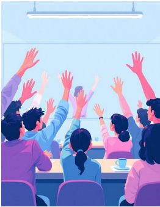

Era una mañana de clase en el programa Técnico
Profesional en Programación Web, el profesor había propuesto una actividad práctica: los
estudiantes debían identificar las estrategias que cada uno utilizaba para aprender por su cuenta y
compartirlas con el grupo. Entre ellos estaban, Luciana, Anderson, Sofía, Mateo y Daniela,
quienes, aunque cursaban el mismo programa, tenían formas muy distintas de estudiar y
organizar su aprendizaje.
Luciana contó que acostumbraba a crear mapas
conceptuales para relacionar ideas y entender los temas complejos. Anderson explicó que prefería aprender practicando: resolvía ejercicios y
proyectos pequeños hasta dominar cada concepto. Sofía, por su parte, organizaba su tiempo
con aplicaciones digitales y establecía metas semanales de estudio. Mateo confesó que a
veces se frustraba cuando no comprendía un tema, pero había empezado a utilizar técnicas
de aprendizaje colaborativo para apoyarse en sus compañeros. Daniela compartió que usaba
plataformas en línea y foros de discusión para mantenerse actualizada sobre nuevas
tendencias tecnológicas.
A medida que intercambiaban experiencias, el grupo comprendió que el aprendizaje continuo
no depende solo del acceso a la información, sino de la capacidad de aplicar estrategias
personales y colectivas que permitan aprender de forma permanente, reflexiva y autónoma.
El profesor les explicó que estas estrategias como la planificación del tiempo, la
autoevaluación, la metacognición, el aprendizaje colaborativo y el uso de recursos digitales
son esenciales para adaptarse a los cambios constantes del mundo tecnológico.
Al finalizar la clase, los estudiantes reconocieron que aprender a lo largo de la vida implica
asumir una actitud proactiva frente al conocimiento, estar abiertos al cambio y desarrollar
hábitos que fortalezcan su capacidad para seguir aprendiendo en cualquier contexto. Así,
comprendieron que el aprendizaje continuo no termina con una asignatura o un semestre,
sino que es un proceso que acompaña su crecimiento personal y profesional.